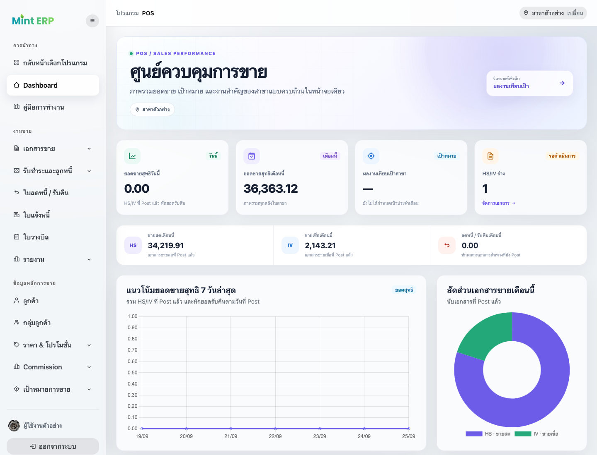

ระบบบริหารธุรกิจสำหรับทีมที่กำลังเติบโต
ระบบ ERP สำหรับธุรกิจไทย
เชื่อมงานขาย คลัง และบัญชี
เชื่อมงานขาย ลูกค้า คลังสินค้า และบัญชีไว้ใน MintERP พร้อมเลือกใช้ Production เมื่อธุรกิจต้องการ ไม่ต้องเริ่มจากการเปลี่ยนทุกอย่างในวันเดียว
ปรับการเริ่มใช้งานและโมดูลให้เหมาะกับขั้นตอนของธุรกิจ
ภาพรวมธุรกิจ
ตัวอย่างข้อมูล
MINT ERP · OVERVIEW
สวัสดี, วันนี้เป็นอย่างไรบ้าง
M
กิจกรรมตามช่วงเวลาตัวอย่าง
100k50k0
จ.อ.พ.พฤ.ศ.ส.อา.
งานที่ต้องติดตาม3
รายการรออนุมัติ02
งานคลังสินค้า04
แผนการผลิต02
ภาพประกอบข้อมูลสมมติ ไม่ใช่ข้อมูลลูกค้าหรือหน้าจอจริง
เห็นสถานะงานจากข้อมูลชุดเดียวกัน
ต่อยอดได้ตามการเติบโตของธุรกิจ
เริ่มจากงานที่ใช้อยู่
ขาย→คลัง→บัญชี→ผลิต เมื่อพร้อม
แสดงตามโมดูลและสิทธิ์ที่ตั้งค่าONE BUSINESS FLOWงานไม่ควรหยุดอยู่
งานไม่ควรหยุดอยู่
แค่คนละแผนก
เมื่อข้อมูลส่งต่อกันได้ ทีมทำงานต่อได้ง่ายขึ้น และผู้บริหารเห็นจุดที่ต้องติดตามจากภาพรวมเดียว
ขายและดูแลลูกค้า
บันทึกความต้องการลูกค้า ใบสั่งขาย และการขายหน้าร้านให้เป็นข้อมูลตั้งต้นของงานถัดไป
- Sales Order และ POS
- ข้อมูลลูกค้าและสถานะการขาย
คลังและการเคลื่อนไหว
ตรวจเอกสารรับ จ่าย โอน และยอดคงเหลือ โดยเชื่อมรายการตามกระบวนการคลัง
- งานรับ–จ่ายและโอนสินค้า
- ตรวจสอบความพร้อมก่อนลงรายการ
การเงินและบัญชี
ติดตามเอกสารการเงินและผลกระทบทางบัญชีจาก workflow ที่ได้รับการตั้งค่า
- ติดตามสถานะเอกสาร
- ตรวจสอบรายการบัญชีที่เกี่ยวข้อง
วางแผนและติดตามการผลิต
สำหรับธุรกิจที่ผลิตสินค้า เพิ่ม BOM ใบสั่งผลิต และติดตามงานผลิตได้เมื่อเปิดใช้ความสามารถนี้
- วางแผนและใบสั่งผลิต
- เบิกวัตถุดิบและรับสินค้าผลิต
OWNER VIEWเห็นงานที่ต้องตาม
เห็นงานที่ต้องตาม
ก่อนจะกลายเป็นปัญหา
ดูสถานะงานขาย คลัง และการผลิตจากข้อมูลที่ทีมบันทึกในระบบ แล้วเจาะดูเอกสารที่เกี่ยวข้องต่อได้ ไม่ต้องเริ่มจากการไล่ถามทีละฝ่าย
ดูความสามารถของระบบยอดขายและรายการค้าง
↗ดูเอกสารที่ยังรอดำเนินการ
คลังและความพร้อมสินค้า
↗ตามรายการรับ–จ่ายและยอดคงเหลือ
แผนและงานผลิต
↗ติดตามใบสั่งผลิตตามสถานะ
ตัวอย่างแนวคิดการติดตามงาน · รายการจริงขึ้นกับการตั้งค่าและสิทธิ์ผู้ใช้
INSIDE MINT ERPหน้าจอจริง
หน้าจอจริง
จาก workflow ของธุรกิจ
ดูตัวอย่างภาพรวมผู้บริหาร งานขาย คลังสินค้า และการผลิต จากระบบ MintERP

ภาพรวมธุรกิจ
ติดตามยอดขาย การเงิน สินค้าคงเหลือ และประเด็นที่ควรให้ความสนใจ

ติดตามงานขาย
เห็นยอดขายตามช่วงเวลา เอกสารขาย และงานที่ทีมต้องดำเนินการต่อ

จัดการสินค้าและคลัง
ค้นหาและดูแลข้อมูลสินค้า หน่วยนับ หมวดสินค้า และสถานะการใช้งาน

ควบคุมงานผลิต
ติดตามใบสั่งผลิต คิวเอกสาร และสถานะงานหน้างานใน Production
ภาพหน้าจอจากสภาพแวดล้อมทดสอบ ชื่อบริษัทและผู้ใช้ถูกแทนที่ ตัวเลขและรายการเป็นข้อมูลตัวอย่าง
BUILT AROUND YOUR WORKเริ่มจากสิ่งที่จำเป็น
เริ่มจากสิ่งที่จำเป็น
แล้วค่อยขยายต่อ
MintERP แบ่งการทำงานเป็นโมดูล เพื่อให้เลือกคุยและวางแผนตามโจทย์จริงของธุรกิจ
01 · INSIGHT◫
Dashboard
ภาพรวมยอดขาย กำไรขั้นต้น กระแสเงินสด ลูกหนี้ เจ้าหนี้ และสินค้าคงเหลือ พร้อมตัวกรองตามช่วงเวลาและสาขา
02 · RELATIONSHIPS♡
CRM
จัดการข้อมูลลูกค้า ติดตามโอกาสการขาย กิจกรรมของทีม และงานที่ต้องติดตามต่อ
03 · SALES↗
ขายและ POS
ต่อขั้นตอนตั้งแต่รับความต้องการ ขอราคา ใบเสนอราคา ใบสั่งขาย ไปจนถึงขายหน้าร้านและรับคืนสินค้า
04 · PROCUREMENT⇄
จัดซื้อ
จัดทำใบขอซื้อและใบสั่งซื้อ ติดตามการรับสินค้า และบันทึกการคืนซื้อ
05 · INVENTORY▦
WMS และสินค้า
จัดการสินค้าและคลัง พร้อมเอกสารรับ จ่าย โอน ปรับปรุง และตรวจนับสต็อก
06 · CASH FLOW฿
Finance
บันทึกรับและจ่ายชำระ ดูแลเงินสดย่อย เงินทดรองพนักงาน และการโอนเงินระหว่างบัญชี
07 · CONTROL≡
Accounting
จัดการผังบัญชี สมุดรายวัน รหัสภาษี และตรวจสอบรายงานหรือรายการบัญชีที่เกี่ยวข้อง
08 · ASSET CARE⌂
Asset
ดูแลทะเบียนสินทรัพย์ การรับรู้สินทรัพย์ การเพิ่มมูลค่า การโอนย้าย และการตรวจนับ
09 · OPTIONAL⚙
Production · ตัวเลือกเสริม
เตรียม BOM วางแผนและออกใบสั่งผลิต ติดตามงานหน้างาน เชื่อมการเบิกวัตถุดิบกับการรับสินค้าผลิต
โมดูล Production เป็นตัวเลือกเสริม ส่วนโมดูล ขั้นตอน และสิทธิ์ใช้งานจริงจะขึ้นกับการตั้งค่าและขอบเขตโครงการ
CLEAR WAYS TO STARTเลือกวิธีใช้งาน
เลือกวิธีใช้งาน
ตามความพร้อมของธุรกิจ
เริ่มด้วยระบบมาตรฐานแบบ Subscription หรือเลือก License เมื่อต้องการติดตั้งและปรับแต่งตามขอบเขตโครงการ
HOSTED · STANDARD
ไม่แก้โค้ดเฉพาะรายSubscription
ใช้งานระบบมาตรฐานบน Cloud Hosting ที่ดูแลโดย AlexiaSoft พร้อมสำรองข้อมูล อัปเดตมาตรฐาน และ Support ในวัน/เวลาทำการ
Core
เริ่มต้น฿5,900 / เดือน
หรือ ฿59,000 / ปี · ลด 2 เดือน
- 1 บริษัท · 1 สาขา
- คลังสินค้า 2 แห่งรวม
- ผู้ใช้ 5 บัญชี
- POS, WMS, จัดซื้อ
- Finance, Accounting และ Dashboard
Business
ทีมที่กำลังขยาย฿10,900 / เดือน
หรือ ฿109,000 / ปี · ลด 2 เดือน
- 1 บริษัท · สูงสุด 3 สาขา
- คลังสินค้า 6 แห่งรวม
- ผู้ใช้ 15 บัญชี
- ทุกโมดูล Core
- เพิ่ม CRM และ Asset
Production เสริม+ ฿3,900 / เดือน หรือ ฿39,000 / ปี · ลด 2 เดือนเปิดใช้ BOM, วางแผน และติดตามงานผลิตเมื่อธุรกิจพร้อม
ค่าติดตั้งแยกต่างหาก: Core เริ่ม ฿19,000 · Business เริ่ม ฿39,000 · Production เพิ่ม ฿15,000 · Support ครอบคลุมคำถามการใช้งานและตรวจสอบปัญหาระบบในวัน/เวลาทำการ
PERPETUAL · PROJECT SCOPE
สิทธิ์ใช้งานถาวรLicense + Customize
ซื้อสิทธิ์ใช้งานตามสัญญา ติดตั้งตามโครงสร้างที่ตกลง และประเมินงานปรับแต่งเป็นโครงการ
Core
License฿320,000 ครั้งเดียว
1 บริษัท · 1 สาขา · ผู้ใช้ 5 บัญชี
- คลังสินค้า 2 แห่งรวม
- POS, WMS, จัดซื้อ
- Finance, Accounting และ Dashboard
- สิทธิ์ใช้ระบบถาวรตามสัญญา
Business
License฿520,000 ครั้งเดียว
1 บริษัท · สูงสุด 3 สาขา · ผู้ใช้ 15 บัญชี
- คลังสินค้า 6 แห่งรวม
- ทุกโมดูล Core
- เพิ่ม CRM และ Asset
- ประเมิน Customize ตามขอบเขต
Production License เสริม+ ฿150,000ติดตั้งและตั้งค่า Production เพิ่ม เริ่ม ฿30,000
ค่าติดตั้งเริ่ม ฿60,000 สำหรับ Core · ฿100,000 สำหรับ Business · บำรุงรักษาและอัปเดตมาตรฐานตั้งแต่ปีที่ 2: 18% ของค่า License ต่อปี · Support ในวัน/เวลาทำการตามข้อตกลงบริการ
ADD CAPACITY
ต้องการเพิ่มผู้ใช้ สาขา หรือคลัง?
คิดเฉพาะส่วนที่เกินจากจำนวนซึ่งรวมในแพ็กเกจ
Subscription
ผู้ใช้เพิ่ม ต่อบัญชี / เดือน฿200
ผู้ใช้เพิ่ม ต่อบัญชี / ปี฿2,000
สาขาเพิ่ม ต่อสาขา / เดือน฿900
สาขาเพิ่ม ต่อสาขา / ปี฿9,000
คลังเพิ่ม ต่อคลัง / เดือน฿500
คลังเพิ่ม ต่อคลัง / ปี฿5,000
License
ผู้ใช้เพิ่ม สิทธิ์ถาวร / บัญชี฿8,000
สาขาเพิ่ม สิทธิ์ถาวร / สาขา฿30,000
คลังเพิ่ม สิทธิ์ถาวร / คลัง฿15,000
Subscription รายปีคิด 10 เดือน · ตั้งค่าสาขาเพิ่มเริ่ม ฿5,000 / สาขา (ครั้งเดียว) · ผู้ใช้เป็นบัญชีรายบุคคล · คลังสังกัดสาขาและนับแยกจากสาขา
ราคาทั้งหมดเป็นราคาเริ่มต้นและไม่รวม VAT · ไม่รวมย้ายข้อมูลเก่า เชื่อมต่อระบบภายนอก และงานพัฒนาเฉพาะ · License ไม่รวม Hosting/เครื่องแม่ข่าย การสำรองข้อมูล และดูแลโครงสร้างพื้นฐาน · รายละเอียด Support และบริการยืนยันในข้อตกลงและใบเสนอราคา
A PRACTICAL STARTเริ่มคุยจากงานจริง
เริ่มคุยจากงานจริง
ไม่ต้องเดาระบบจากโบรชัวร์
ทีม AlexiaSoft จะช่วยทำความเข้าใจ workflow และสาธิตส่วนที่เกี่ยวข้อง ก่อนตกลงขอบเขตการติดตั้ง
คุยโจทย์ธุรกิจ
ทำความเข้าใจทีม เอกสาร และจุดที่ต้องการปรับปรุง
ดูสาธิตตาม workflow
เลือกดูเฉพาะกระบวนการที่เกี่ยวข้องกับธุรกิจของคุณ
กำหนดขอบเขตและแผน
สรุปโมดูล ข้อมูลตั้งต้น และแนวทางนำระบบไปใช้
เตรียมทีมก่อนเริ่มใช้
วางแผนตั้งค่า ทดสอบ และแนะนำผู้ใช้งานก่อน Go-live
QUICK ANSWERSก่อนนัดดูระบบ
ก่อนนัดดูระบบ
คุณอาจอยากรู้
คำตอบเบื้องต้นเพื่อช่วยเตรียมโจทย์สำหรับคุยกับทีม
ถามทีมงานโดยตรงMintERP เหมาะกับธุรกิจแบบไหน?
เหมาะกับธุรกิจที่ต้องการเชื่อมข้อมูลขาย คลัง และงานหลังบ้าน หากมีการผลิต สามารถคุยเรื่องเปิดใช้โมดูล Production เพิ่มได้
ต้องเปิดใช้ทุกโมดูลพร้อมกันไหม?
ไม่จำเป็น ขอบเขตการใช้งานและลำดับการเริ่มต้นสามารถวางแผนตามความพร้อมของธุรกิจได้
Subscription กับ License ต่างกันอย่างไร?
Subscription ใช้ระบบมาตรฐานแบบรายเดือนหรือรายปี รวม Cloud Hosting การสำรองข้อมูล อัปเดตมาตรฐาน และ Support ในวัน/เวลาทำการ ส่วน License เป็นสิทธิ์ใช้งานถาวรตามสัญญา ไม่รวม Hosting/เครื่องแม่ข่าย โดยค่าติดตั้งและการปรับแต่งคิดตามขอบเขตโครงการ
Support ติดต่อได้เมื่อไรและครอบคลุมอะไร?
Support ให้บริการในวันและเวลาทำการของ AlexiaSoft สำหรับคำถามการใช้งานและตรวจสอบปัญหาระบบ งานพัฒนาเพิ่ม ย้ายข้อมูล และเชื่อมต่อระบบภายนอกไม่รวมอยู่ใน Support ปกติ โดยรายละเอียดบริการระบุในข้อตกลง
ราคาที่แสดงรวมการย้ายข้อมูลหรือพัฒนาเพิ่มไหม?
ยังไม่รวม การย้ายข้อมูล เชื่อมต่อระบบเดิม และงานปรับแต่งเฉพาะจะประเมินแยกก่อนเริ่มงาน
ขอดู Demo หรือสอบถามราคาได้อย่างไร?
ติดต่อทีม AlexiaSoft เพื่อแจ้งประเภทธุรกิจและขั้นตอนที่อยากดู ทีมงานจะนัดสาธิตและคุยขอบเขตที่เหมาะสม
ระบบรองรับการติดตั้งแบบใด?
รูปแบบการติดตั้งและการดูแลระบบขึ้นกับขอบเขตโครงการ กรุณาคุยความต้องการและข้อกำหนดด้านโครงสร้างพื้นฐานกับทีมงานก่อนตัดสินใจ
READY WHEN YOU AREอยากเห็นว่า MintERP
อยากเห็นว่า MintERP
เข้ากับงานของคุณอย่างไร?
เล่าโจทย์ให้เราฟัง แล้วนัดดู workflow ที่เกี่ยวข้องกับธุรกิจของคุณ
หรือส่งอีเมล sale@alexiasoft.co